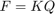

Actividad 1
Autor: Rodrigo Luna Reyes; Fecha: 11 de enero de 2021
Contents
Material: Madera del tipo Douglas Fir
E = 13.1e+9; %Pa % Sección Transversal A = 3.6e-3; %m^2 % Longitud de los elementos L = 4; %m
Constantes de rigidez de cada elemento.
k1 = PlaneTrussElementStiffness(E,A,L,60); k2 = PlaneTrussElementStiffness(E,A,L,0); k3 = PlaneTrussElementStiffness(E,A,L,0); k4 = PlaneTrussElementStiffness(E,A,L,120); k5 = PlaneTrussElementStiffness(E,A,L,0); k6 = PlaneTrussElementStiffness(E,A,L,0); k7 = PlaneTrussElementStiffness(E,A,L,0); k8 = PlaneTrussElementStiffness(E,A,L,120); k9 = PlaneTrussElementStiffness(E,A,L,60); k10 = PlaneTrussElementStiffness(E,A,L,120); k11 = PlaneTrussElementStiffness(E,A,L,60);
Construcción de la matriz de rigidez
K = zeros(14); K = PlaneTrussAssemble(K, k1, 1, 2); K = PlaneTrussAssemble(K, k2, 2, 3); K = PlaneTrussAssemble(K, k3, 3, 4); K = PlaneTrussAssemble(K, k4, 5, 4); K = PlaneTrussAssemble(K, k5, 6, 5); K = PlaneTrussAssemble(K, k6, 7, 6); K = PlaneTrussAssemble(K, k7, 1, 7); K = PlaneTrussAssemble(K, k8, 7, 2); K = PlaneTrussAssemble(K, k9, 7, 3); K = PlaneTrussAssemble(K, k10, 6, 3); K = PlaneTrussAssemble(K, k11, 6, 4); k = K([3:9, 11:14], [3:9, 11:14]);
Declaramos el vector de fuerzas
En este caso excluimos las fuerzas de reacción que actuan en el nodo A (q1 y q2) y la reacción vertical del nodo E (q10).
f = [0; 0; 0; 0; 0; 0; 0; 0; 0; 0; -108e+3];
Resolviendo para q
Resolvemos la ecuación para obtener los desplazamientos de cada nodo

q = k\f; Q = [0; 0; q(1:7); 0; q(8:end)] % Obteniendo el vector de fuerzas final F = K*Q; % Extraemos los valores de las reacciones (f1, f2 y f10) % Nodo A: Ra = F([2 3]) % Nodo E Re = F(10)
Q =
0.0000e+000
0.0000e+000
11.7527e-003
-14.9279e-003
4.7011e-003
-24.4275e-003
1.1753e-003
-9.4996e-003
10.5774e-003
0.0000e+000
8.8145e-003
-17.9813e-003
3.5258e-003
-27.8202e-003
Ra =
72.0000e+003
0.0000e+000
Re =
36.0000e+003
Esfuerzos axiales
s1 = PlaneTrussElementStress(E,L,60,Q([1:4])) s2 = PlaneTrussElementStress(E,L,0,Q([3:6])) s3 = PlaneTrussElementStress(E,L,0,Q([5:8])) s4 = PlaneTrussElementStress(E,L,120,Q([9 10 7 8])) s5 = PlaneTrussElementStress(E,L,0,Q([11 12 9 10])) s6 = PlaneTrussElementStress(E,L,0,Q([13 14 11 12])) s7 = PlaneTrussElementStress(E,L,0,Q([1 2 13 14])) s8 = PlaneTrussElementStress(E,L,120,Q([13 14 3 4])) s9 = PlaneTrussElementStress(E,L,60,Q([13 14 5 6])) s10 = PlaneTrussElementStress(E,L,120,Q([11 12 5 6])) s11 = PlaneTrussElementStress(E,L,60,Q([11 12 7 8]))
s1 =
-23.0940e+006
s2 =
-23.0940e+006
s3 =
-11.5470e+006
s4 =
-11.5470e+006
s5 =
5.7735e+006
s6 =
17.3205e+006
s7 =
11.5470e+006
s8 =
23.0940e+006
s9 =
11.5470e+006
s10 =
-11.5470e+006
s11 =
11.5470e+006
Fuerzas internas
f1 = s1*A f2 = s2*A f3 = s3*A f4 = s4*A f5 = s5*A f6 = s6*A f7 = s7*A f8 = s8*A f9 = s9*A f10 = s10*A f11 = s11*A
f1 =
-83.1384e+003
f2 =
-83.1384e+003
f3 =
-41.5692e+003
f4 =
-41.5692e+003
f5 =
20.7846e+003
f6 =
62.3538e+003
f7 =
41.5692e+003
f8 =
83.1384e+003
f9 =
41.5692e+003
f10 =
-41.5692e+003
f11 =
41.5692e+003